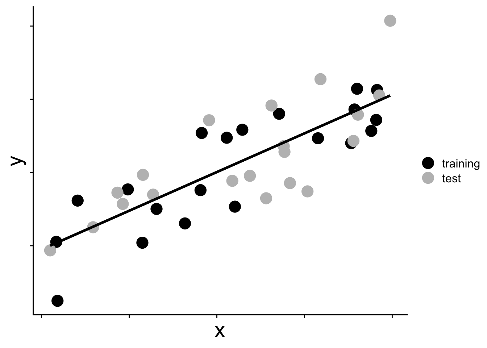

mod_temp <- glm.nb(nspp ~ log(Plot_Area) + avg_temp_annual_c,
data = dat_plt)
AIC(mod_temp)[1] 2321.152mod_hii <- glm.nb(nspp ~ log(Plot_Area) + hii,
data = dat_plt)
AIC(mod_hii)[1] 2314.374Previously we saw that the likelihood ratio test (LRT) can compare models. But the LRT has a key restriction: the models being compared must be nested—one model must be a simplified version of the other, obtainable by setting some parameter(s) to zero or another fixed constant. What happens when the models we want to compare cannot be nested?
Consider a question we left unresolved when studying collinearity: does temperature or human impact do a better job predicting tree species richness? We cannot combine both explanatory variables in one model because they are collinear and estimates of their slopes will be inconsistent. Instead we are left with two competing single-predictor models:
\[ \begin{aligned} \log(\mu_\text{nspp}) &= b_0 + b_1 \log(\text{area}) + b_2 \text{ temperature} \\ \log(\mu_\text{nspp}) &= b_0 + b_1 \log(\text{area}) + b_2 \text{ human impact} \end{aligned} \]
Neither of these is a special case of the other. In fact they have the same number of parameters, so even if we compared the difference of their log likelihoods, the proper \(\chi^2\) distribution would have degrees of freedom equal to 0, which cannot exist. So the LRT cannot help us here, but a new approach called Akaike Information Criterion can.
The Akaike Information Criterion (AIC) is a measure of model support that can be applied to any two models fit to the same data, regardless of whether they are nested:
\[ \mathcal{l}(\hat{\theta}_\text{MLE}) - k \]
Then to get AIC we multiply that above expression by \(-2\)
\[ \text{AIC} = -2\mathcal{l}(\hat{\theta}_\text{MLE}) + 2k \]
where \(\mathcal{l}(\hat{\theta}_\text{MLE})\) is the maximum log-likelihood of the model and \(k\) is the number of estimated parameters. Lower AIC means better support. We can compute it directly in R with the AIC function:
mod_temp <- glm.nb(nspp ~ log(Plot_Area) + avg_temp_annual_c,
data = dat_plt)
AIC(mod_temp)[1] 2321.152mod_hii <- glm.nb(nspp ~ log(Plot_Area) + hii,
data = dat_plt)
AIC(mod_hii)[1] 2314.374Note that these models are built using dat_plt which is the same data.frame we have been working with that we made by joining the tree survey data, with climate data, with geophysical and human impact data.
We see that the AIC for the human impact model is lower so we conclude that the human impact model is better supported by the data.
The \(2k\) term in AIC deserves some thought. In the case with human impact model versus the temperature model, this \(2k\) term is irrelevant because both models have the same number of parameters. So let’s make another, more complex (meaning more parameters) model.
mod_temp_precip <- glm.nb(
nspp ~ log(Plot_Area) + avg_temp_annual_c + rain_annual_mm,
data = dat_plt
)It’s reasonable to ask: why penalize for the number of parameters at all? The reason is that adding parameters to a model will always increase the log-likelihood—a model with more parameters can always fit the data at least as well as a simpler one. We can see that in comparing the mod_temp_precip model to the mod_temp model:
logLik(mod_temp_precip)'log Lik.' -1143.968 (df=5)logLik(mod_temp)'log Lik.' -1156.576 (df=4)The increased log likelihood of the more complex model could indicate that the model really does describe the data better. But a higher log likelihood does not necessarily mean the more complex model is genuinely better at making predictions. A model with too many parameters can overfit: it starts fitting the noise specific to the sample rather than the underlying signal.
The AIC penalty of \(2k\) addresses this directly: it tries to account for the artificial increase in log likelihood due to potential overfitting while not overly penalizing genuine improvement in predictive ability. The reason for a penalty of \(2k\) is quite interesting and is based on trying to balance having enough parameters to make good predictions, but not too many so that our model is overfit. Figuring out that balance relies on using this hypothetical scenario:
Imagine we have two data sets, each with sample size \(n\), that come from exactly the same study system. And imagine we use one data set (we’ll call it the “training” set) to fit a model with maximum likelihood. The other data set well call the “test” set, because soon we will test our model on that “test” data set. Our two data sets, and the one model, might look something like this

Now that we have fit our model to the training data (aka we have “trained” our model) let’s see how well it predicts the test data. To see how well it predicts the test data we could calculate the maximum of the log likelihood function (with parameters fit to the training data) given the test data. Put another way, what is the maximum log likelihood of the model when we show it data it has never seen before?
For the two hypothetical data sets shown in the figure above we have these two maximum log likelihood values
Given the training data, the max log likelihood of model fit to training data is
Given the test data, the max log likelihood of model fit to training data is
\(\mathcal{l}(\hat{\theta}_\text{training} \mid \text{data}_\text{training})\)
\(\mathcal{l}(\hat{\theta}_\text{training} \mid \text{data}_\text{test})\)
The surprisingly simple result first identified by Akaike (1974) is that if we divide each of these max log likelihoods by sample size (equivilant to the average log likelihood of each data point) we find the difference between them is approximately \(k\)
\[ \frac{1}{n}\mathcal{l}(\hat{\theta}_\text{training} \mid \text{data}_\text{training}) - \frac{1}{n}\mathcal{l}(\hat{\theta}_\text{training} \mid \text{data}_\text{test}) \approx k \]
So the difference between these average log likelihoods will be larger for a model with more parameters. That’s the cost of potential over fitting.
If we deduct this “over fitting cost” from the log likelihood of a model we get
\[ \text{AIC} = -2\mathcal{l}(\hat{\theta}_\text{MLE}) + 2k \]
Because we have accounted for the cost of additional parameters, we can safely use AIC to compare the models mod_temp_precip and mod_hii which have different numbers of parameters.
AIC(mod_temp_precip)[1] 2297.937AIC(mod_hii)[1] 2314.374We can now be confident that the improvement for the temp + rain model is not simply due to more parameters, but is genuinely because those additional parameters add to the predictive ability of the model.
Because AIC values are only interpretable relative to one another, it is conventional to work with \(\Delta\text{AIC}\), the difference between each model’s AIC and the minimum AIC in the set of models we’re considering. For the three models we’ve been working with, the \(\Delta AIC\) values are
AIC_min <- AIC(mod_temp_precip)
AIC(mod_temp_precip) - AIC_min[1] 0AIC(mod_hii) - AIC_min[1] 16.43757AIC(mod_temp) - AIC_min[1] 23.21558Burnham & Anderson (2002) studied the behavior of AIC for many different models and found the heuristic rule that models within 2 AIC units of the best model are effectively equivalent in their support. Only a difference larger than 2 indicates that one model is genuinely better supported than another. In our case, each model is separated by \(> 2 \Delta AIC\) so their respective supports are different.
Model comparison tells us which model is best supported—a useful way of testing hypotheses. But sometimes our goal is not to pick which model is best supported, but rather make the most accurate prediction possible. When the goal is prediction, a different strategy often performs better: model averaging. Rather than relying on a single model, we combine the predictions of multiple models. This can be more accurate than any one model individually, and can more honestly represent our uncertainty as scientists about which model might make the most biological sense a priori.
Consider the three models we have built:
#| eval: false
nspp ~ log(Plot_Area) + hiinspp ~ log(Plot_Area) + hiinspp ~ log(Plot_Area) + avg_temp_annual_cnspp ~ log(Plot_Area) + avg_temp_annual_cnspp ~ log(Plot_Area) + avg_temp_annual_c + rain_annual_mmnspp ~ log(Plot_Area) + avg_temp_annual_c + rain_annual_mmEach makes different predictions about the expected species richness of a plot. But if our goal is making one prediction for richness of a plot, we need to somehow combine the three different predictions into one. We could just make one big model with all explanatory variables
nspp ~ log(Plot_Area) + hii + avg_temp_annual_c + rain_annual_mmBut this approach is not neccesarily ideal because we already know that including all predictors together creates collinearity problems, and for smaller data sets there is an ever greater risk of overfitting.
One natural way to combine models is to average the coefficients. For a variable like temperature that appears in some but not all models, we could simply take the mean of its estimated slopes across all models where it appears:
b31 <- coefficients(mod_temp)["avg_temp_annual_c"]
b32 <- coefficients(mod_temp_precip)["avg_temp_annual_c"]
mean(c(b31, b32))[1] 0.02612386There are actually two conventions for handling variables that do not appear in every model. One averages only over models where the variable appears (as above). The other includes a slope of zero for models that omit the variable, giving a more conservative (smaller) average. The default behavior of the R package we will use follows the first convention.
A simple average treats all models equally, but we already know from the AIC values that some models are better supported than others:
AIC(mod_hii)[1] 2314.374AIC(mod_temp)[1] 2321.152AIC(mod_temp_precip)[1] 2297.937It makes sense when averaging to give more weight to better-supported models. To do this we first calculate Akaike weights. These weights are used when averaging to make better supported models contribute more to the average value. The Akaike weight \(w_i\) for model \(i\) is
\[ w_i = \frac{e^{-\Delta\text{AIC}_i / 2}}{\sum_j e^{-\Delta\text{AIC}_j / 2}} \]
where \(\Delta\text{AIC}_i = \text{AIC}(\text{model}_i) - \min(\text{AIC})\). The weights sum to 1 across all models we’re considering (like a probability) and can be loosely interpreted as the probability that model \(i\) is the best-supported model given the data and the set of models considered.
delta_AIC_hii <- AIC(mod_hii) - AIC_min
delta_AIC_temp <- AIC(mod_temp) - AIC_min
delta_AIC_temp_precip <- AIC(mod_temp_precip) - AIC_min
# we need to calculate e^{-delta AIC / 2} for each model,
# do it in a vector
exp_terms <- exp(-c(delta_AIC_hii, delta_AIC_temp, delta_AIC_temp_precip) / 2)
# now we can use that vector to make the weights
w_hii <- exp_terms[1] / sum(exp_terms)
w_temp <- exp_terms[2] / sum(exp_terms)
w_temp_precip <- exp_terms[3] / sum(exp_terms)
w_hii[1] 0.0002694676w_temp[1] 9.092406e-06w_temp_precip[1] 0.9997214To use the weights for averaging models we take a weighted mean. A weighted mean is simply a sum of values, each multiplied by a weight, with the weights summing to 1. Earlier we averaged the slope of temperature, we will now do the same but with a weighted mean. Because temperature is not present in all models, we have to re-normalize the weights (so they sum to 1) of the models where it is present
weighted.mean(c(b31, b32),
c(w_temp, w_temp_precip) / (w_temp + w_temp_precip))[1] 0.02797481Computing these weights and averaging parameters by hand is tedious. The MuMIn package does this for us. The model.avg function takes a list of candidate models and returns an averaged model object:
library(MuMIn)
mod_avg <- model.avg(list(mod_hii, mod_temp, mod_temp_precip))We can inspect the averaged coefficients directly:
coefficients(mod_avg) (Intercept) log(Plot_Area) avg_temp_annual_c rain_annual_mm
-2.5267209876 0.4876844180 0.0279748056 0.0000782252
hii
0.0133591861 The model table, accessed with $msTable, shows each candidate model ranked from best to worst supported, along with its AIC, \(\Delta\)AIC, and weight:
mod_avg$msTable df logLik AICc delta weight
134 5 -1143.968 2298.052 0.00000 9.997160e-01
23 4 -1153.187 2314.451 16.39911 2.746982e-04
13 4 -1156.576 2321.229 23.17712 9.268898e-06You will notice that MuMIn reports AICc rather than AIC, which makes the output of mod.avg slightly different from our by-hand calculations. AICc is a sample-size-corrected version of AIC that applies an additional penalty for small samples. It is generally a good idea to use AICc. But for large samples, like the one we’re using, the correction is negligible:
AIC(mod_temp_precip)[1] 2297.937# the AICc function is provided by MuMIn
AICc(mod_temp_precip)[1] 2298.052Model averaging can also be used to evaluate a form of “importance” for explanatory variables. The idea of variable importance seeks to assign a weight to each explanatory variable we are considering with higher weights indicating that a variable is more important for making accurate predictions of the response variable.
We calculate this importance by summing the Akaike weights of the models where each variable is present. This is typically done by making all possible models from a set of variables. For three explanatory variables x1, x2, and x3, and excluding interaction terms, that would be
y ~ x1
y ~ x2
y ~ x3
y ~ x1 + x2
y ~ x1 + x3
y ~ x2 + x3
y ~ x1 + x2 + x3MuMIn provides a function dredge that automatically builds all such models from one global model containing every explanatory variable of interest.
# global model with all predictors of interest
# na.action = "na.fail" is required by dredge
mod_big <- glm.nb(
nspp ~ log(Plot_Area) + hii + avg_temp_annual_c + rain_annual_mm,
data = dat_plt, na.action = "na.fail"
)
# fit all sub-models and compute AIC weights
big_dredge <- dredge(mod_big)Now we can look at the summed weights for each explanatory variable with the sw function
# summed weights = variable importance
sw(big_dredge) log(Plot_Area) rain_annual_mm hii avg_temp_annual_c
Sum of weights: 1.00 1.00 0.99 0.45
N containing models: 8 8 8 8 Plot area is highly important—not a surprise given the well-established species–area relationship. Among the environmental and anthropogenic predictors, human impact index and annual rainfall both receive high summed weights, while temperature is somewhat less consistently supported. This matches the earlier head-to-head comparison where the human impact model outperformed the temperature-only model.
This workflow based on dredgeing should be approached with some care. Generating every possible combination of predictors and letting AIC pick the winner is not usually considered best practice. Its name—dredging—is meant to communicate this negative implication. The primary issue is that building multiple models can inflate false-positive rates and is no substitute for thinking carefully about which variables are biologically meaningful. However, when the candidate variables are pre-selected on biological grounds, summed variable importance scores can provide a useful summary of which predictors are most consistently supported across the model set.